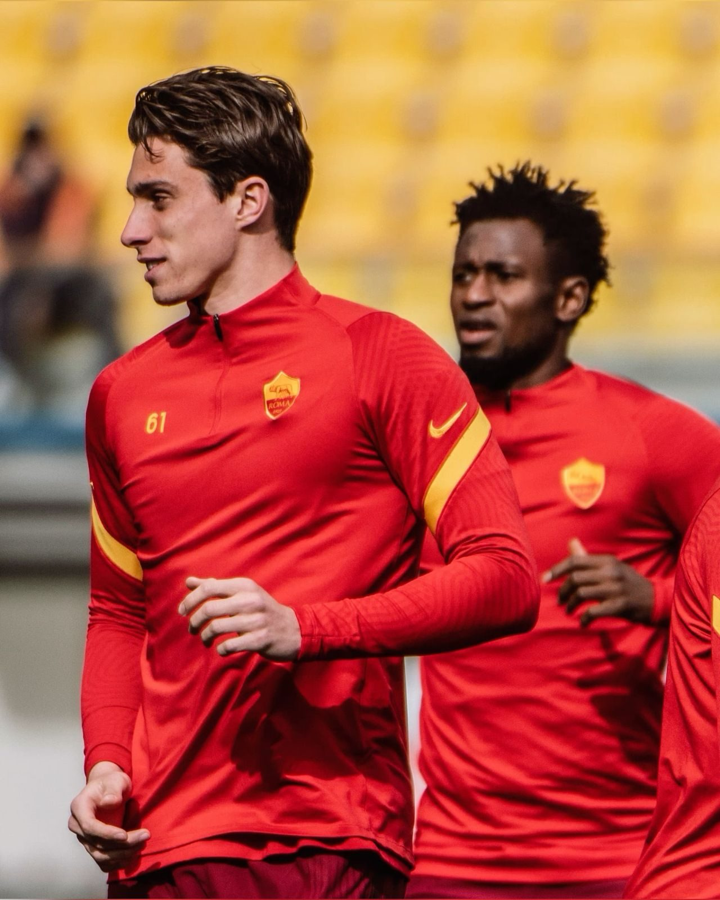
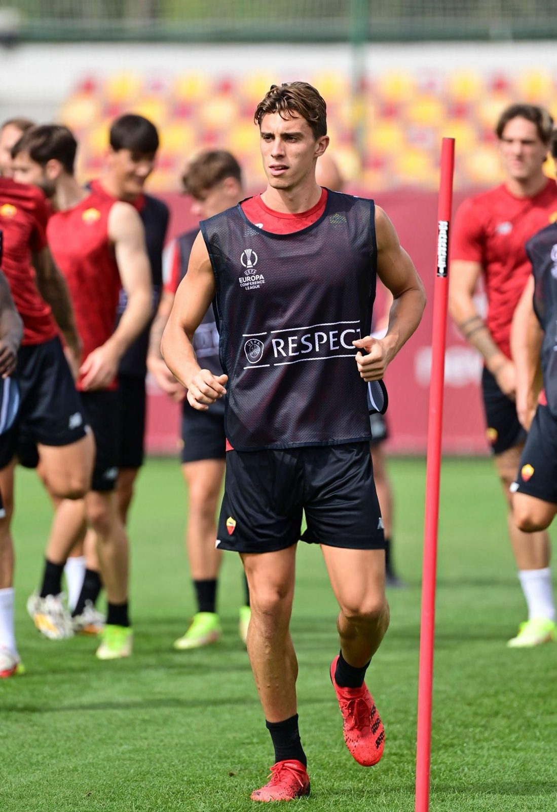
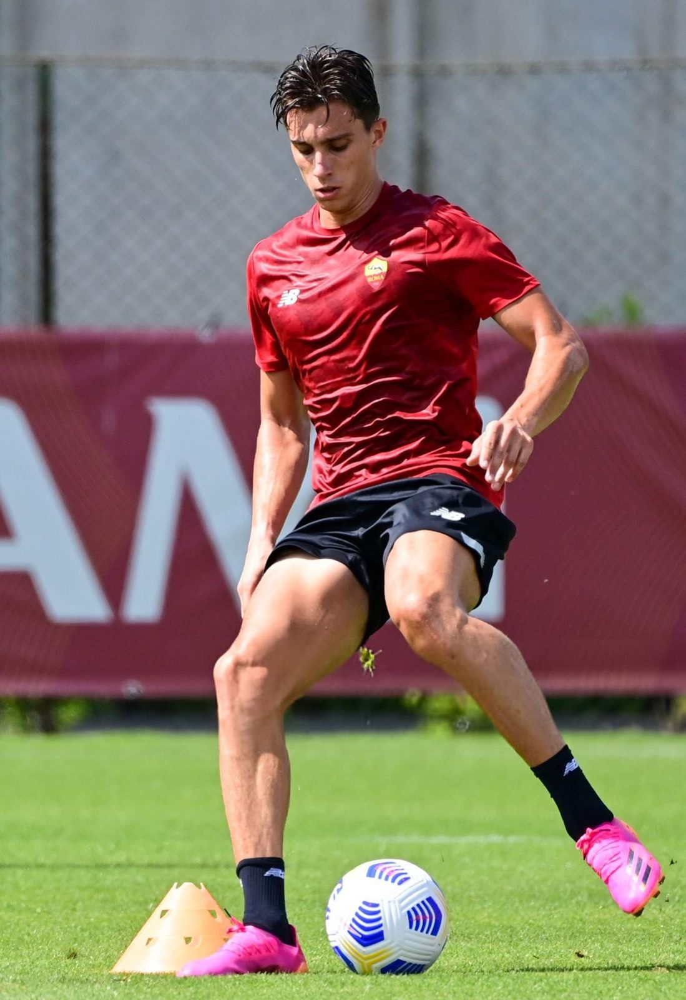
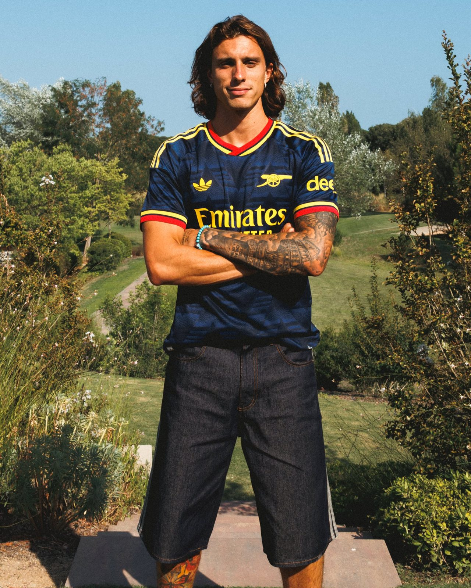
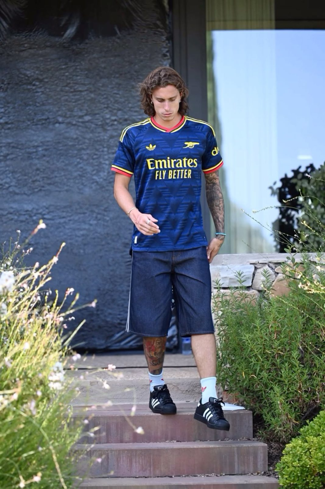
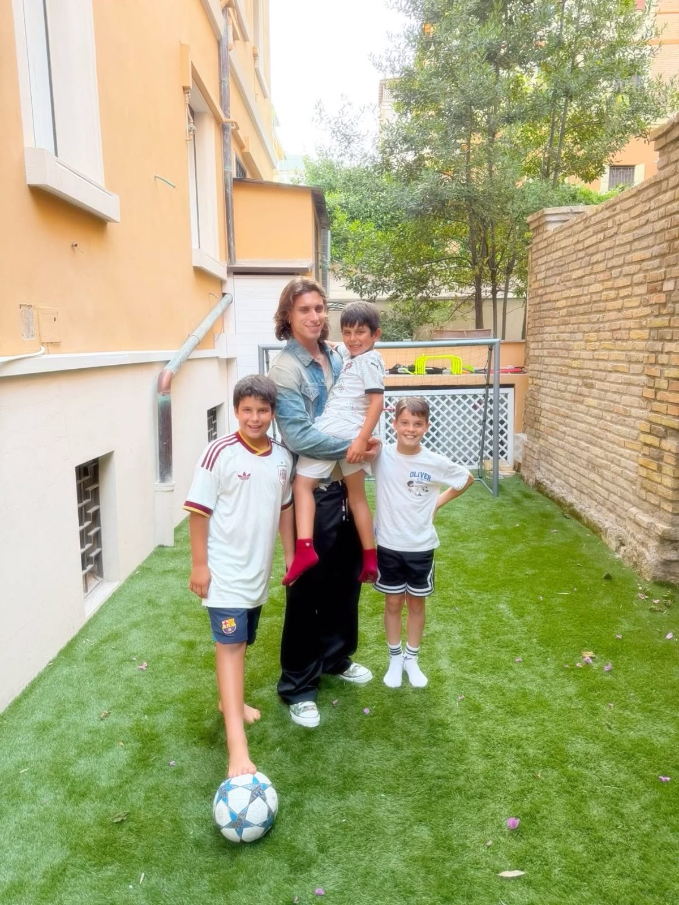

5:22
▶
阿森纳球衣特辑 · 卡拉菲奥里 × 加布里埃尔
两位球员一起挑选经典阿森纳球衣，畅聊童年主队与职业生涯的梦想。
按转会时期分类 · 点击卡片直达对应时期的照片合集
8岁进入罗马青训营，成长为意大利最有潜力的后防新星，并完成一线队首秀。
查看照片合集 →2022年转会瑞士超巴塞尔，代表球队出战欧战赛场，逐渐进入主流视野。
查看照片合集 →2023年加盟博洛尼亚，交出惊艳赛季，入选意甲赛季最佳阵容。
查看照片合集 →2024年登陆英超加盟阿森纳，身披33号战袍，成为红白防线的重要一员。
查看照片合集 →视频采访在线观看 · 点击封面播放 · 附中文文字稿
两位球员一起挑选经典阿森纳球衣，畅聊童年主队与职业生涯的梦想。
新赛季首冠：卡拉菲奥里 24 秒闪击破门，阿森纳战胜曼城捧起社区盾杯。
🎬 上传新采访视频？
把视频放进 assets/video/interviews/ 文件夹，或用手机在 GitHub 上直接上传（步骤见使用说明），新视频会自动出现在这里。告诉我一声，我会为它转写并生成中文文字稿。
【主持人】欢迎两位！今天的规则很简单：咱们看一批球衣，你们各自挑一件喜欢的，带回家，皆大欢喜。
【主持人】对了，之前上过节目的尼克从来不叫「Arsenal」，一定要叫「the Arsenal」。你们俩呢？
【卡拉菲奥里】我就说 Arsenal。
【主持人】这件是亚当斯和赖特那个年代的，黄色这件也不错。这件让你有感触吗，里卡多？
【卡拉菲奥里】对，这件我……我想我就选它。
【主持人】说说瑞士联赛吧，在那边踢球感觉怎么样？
【卡拉菲奥里】完全不一样。有时候心理上挺折磨的——一个赛季你可能要对同一支球队踢四到六次，因为联赛只有十到十二支队，杯赛里可能还要再碰上。
【主持人】你们俩都来自好天气、好美食的国度（巴西和意大利），搬来英格兰是怎么适应的？伙食上总得适应吧？
【加布里埃尔】我真的很想念阳光，当然还有美食。不过得说，伦敦好吃的餐厅太多了。
【卡拉菲奥里】对我来说倒不是食物和阳光的问题。天气嘛……确实难熬。我更想念家人和朋友。
【主持人】伦敦有什么好的巴西餐厅？
【加布里埃尔】Fogo de Chão，我常去。
【主持人】小时候你们都支持哪支队？
【加布里埃尔】科林蒂安！永远是科林蒂安！
【主持人】那你呢，里卡多？
【卡拉菲奥里】我？当然是罗马。
【主持人】听说你还去巴西现场看过科林蒂安？
【加布里埃尔】对，在解放者杯上。球迷太棒了，球场也特别美。
【主持人】梦想职业生涯末期去科林蒂安踢球吗？
【加布里埃尔】当然，那是我的梦想。
【主持人】回罗马呢，里卡多？
【卡拉菲奥里】当然，一样的想法。为什么不呢？那一直是我的梦想。
【主持人】你们平时会交换球衣吗？
【加布里埃尔】我不怎么换。
【卡拉菲奥里】我也是。我更愿意把自己的球衣送给朋友，这样更好。
【主持人】好了，加布里埃尔，该你挑了。……这件？它可是落场球衣（match-worn），不能随便拿。
【加布里埃尔】那我出个价？
【主持人】说实话，它大概值两千块。
【主持人】见到你真高兴，恭喜夺冠！我们刚才还在说，你不用摘耳环，我们不会说你的，不过那几位（队友）可说不定。
【主持人】首先恭喜你们！赢得赛季第一座奖杯，感觉怎么样？
【卡拉菲奥里】我觉得这是一场非常重要的比赛，对我们是一次重要的检验。奖杯固然重要，但更重要的是检验我们上赛季夺冠后的心态。我觉得我们开了一个完美的好头。
【主持人】确实完美——24 秒就进球了，这开局太棒了，对吧？
【卡拉菲奥里】太不可思议了。这么早进球对全队帮助很大，早进球能让球队踢得更从容。
【主持人】里卡多，比赛一开始就感觉你一直在前插，那么多人都压到前场了。这是教练的布置吗？你做了很多次这样的跑动。
【卡拉菲奥里】是的，我总是努力给队友提供出球选择。不过这次特别要说，迈尔斯的传球简直不可思议，不是所有球员都能看到这种传球线路的。我一直在跑位，而迈尔斯给了我一记完美的传球……
【主持人】所以是跑动成就了进球，还是传球成就了进球？
【卡拉菲奥里】我觉得七成归他，三成归我。
【主持人】你太谦虚了。
【主持人】今天的新援表现怎么样？克里斯托斯和布鲁诺？
【卡拉菲奥里】我和克里斯托斯已经一起踢过三四场比赛了，我觉得他是今天场上最好的球员之一。布鲁诺也一样，他总是想向前传球，我喜欢这种类型的球员。今天也许还不是最佳状态，但这才是第一场比赛，赛季还很长。真的非常高兴他加入我们。
【主持人】你怎么看待进入主力阵容的压力？你身边还有另一位左后卫，他风格不同——下底、内切、防守对抗更强，你们之间没有差距，享受这种竞争吗？
【卡拉菲奥里】是的，确实是竞争，但我不把它看作竞争——他是我在阿森纳最好的朋友之一，我们关系非常好。就像你说的，我们风格真的很不一样。如果我是教练，我会很高兴有这两个选择。当然，选谁上场不容易，这问题就留给教练吧。
【主持人】交给教练？
【卡拉菲奥里】对，交给他。我很高兴能首发这场决赛，这是我第一次在决赛中首发，真的很开心。
【主持人】教练在季前赛对你们说了什么，让大家重新拧成一股绳、保持强度去争取更多奖杯？
【卡拉菲奥里】这个季前赛确实有点特殊，经过一个赛季的征战，调整并不容易，必须想想新的方式。我真的很欣赏队友们从短暂假期回来的状态——他们的假期和我的（养伤时间）正好相反。
【主持人】不过你利用那段时间恢复得不错，毕竟之前有伤病困扰。
【卡拉菲奥里】显然受伤让我不开心，但同时也希望在赛季里你们能看到，我比别人多休息了那么久。我喜欢球队的心态，喜欢我们回归的方式。今天的比赛太棒了。
【主持人】你对今天曼城的表现感到意外吗？
【卡拉菲奥里】我总是说，我更专注于自己和球队。我没太关注他们，只是为我们的表现感到非常高兴。
【主持人】那对你们自己今天的表现意外吗？跟上赛季的表现有多接近？
【卡拉菲奥里】不意外。我觉得这样的表现已经接近完美了，真的非常好。
【主持人】好极了，那就不耽误你庆祝了。谢谢！
【卡拉菲奥里】非常感谢，也恭喜大家。
【旁白】阿森纳赢下社区盾杯，开门红！接下来我们还将听到主帅米克尔·阿尔特塔的声音。
按时期分类的照片合集 · 点击照片可放大查看





